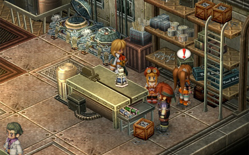
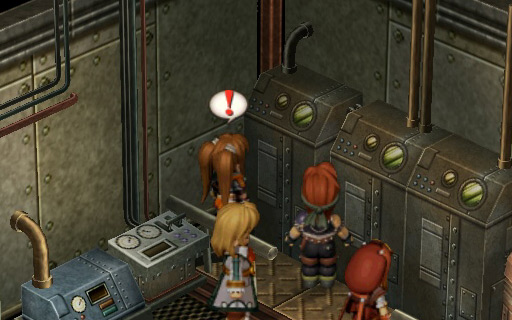
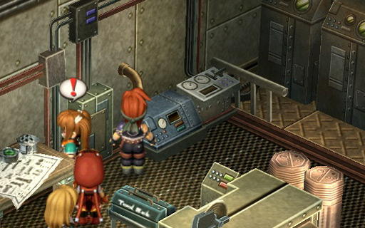
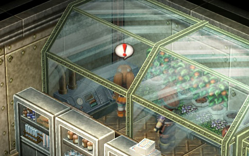
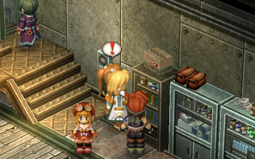
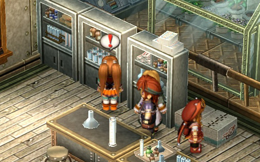
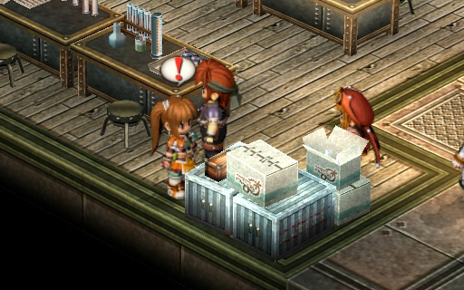
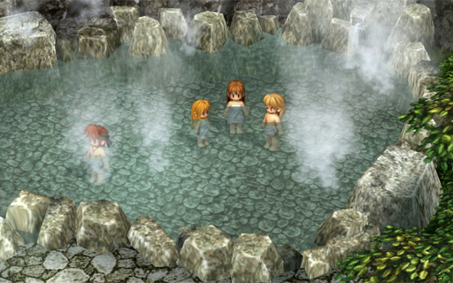
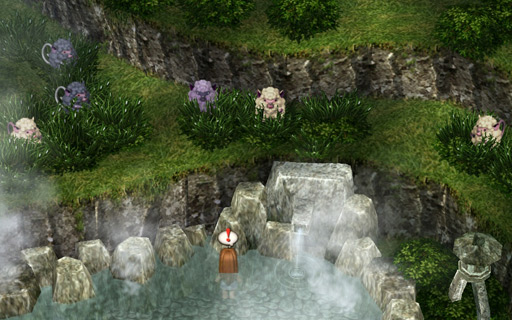
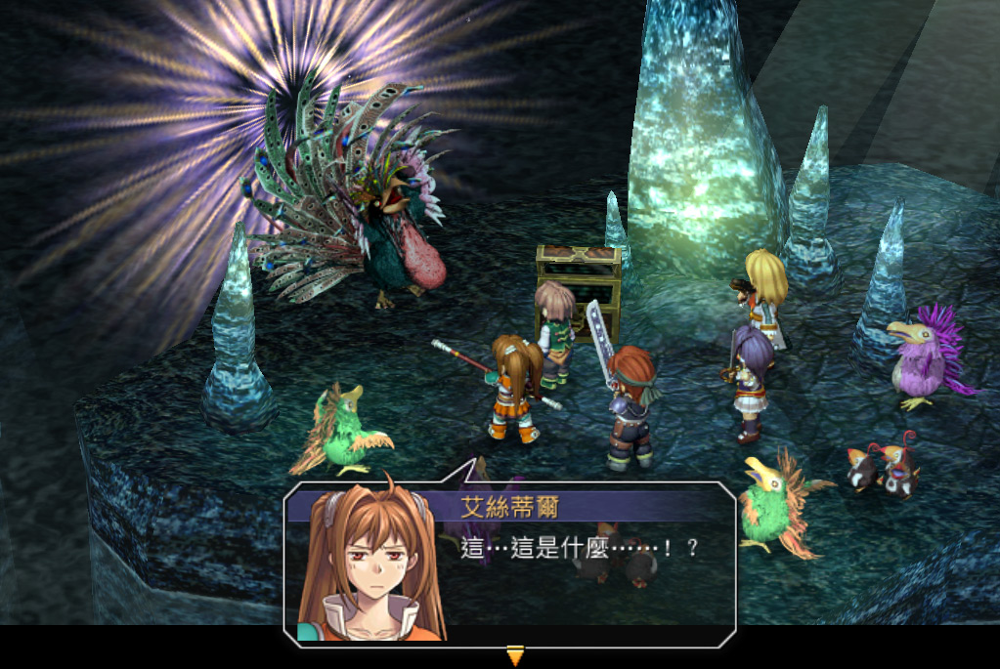

Take the east exit out of Zeiss and head to the Leiston Fortress. Before speaking with the guard, equip the team with accessories that protect against Blind, Freeze, and Faint status effects.
Basically, the team has to fight three consecutive battles as part of the soldiers' special training. Also, to make things a bit more difficult, you don't get "auto-healed" in between battles, so be sure to heal up before defeating the last soldier.
You reeeeeeeally want to win all three battles, as you get a good prize out of it (an accessory that boosts CP), so remember to heal up before winning each battle.
This is basically a warmup round. Having Estelle use her Morale ability for the STR bonus should speed things up a bit.
Another warmup round. Again, have Estelle use Morale to make things easier.
Commander Sid is somewhat strong, so this third battle isn't a pushover like the other two. His attacks are pretty strong too:
Again, have Estelle start off with Morale. There is two key points to making this battle go smoother. First, if you keep your HP above 1700, that pretty much mitigates Commander Sid's strong attack. Second, always have someone other than Olivier be close to the commander. This is so that whenever he is casting the Tornado spell, you always have someone nearby to dispel it .... otherwise, it will be quite painful.
Talk to Kirika in the Bracer Guild and choose "About the Sign" to start the sidequest. A witness says that someone disguised as a worker was at the Bracer Guild. It doesn't take a genius to conclude that disguise + card hints = Blblanc is behind this.
Looks like Estelle will again have to solve the riddles on the cards to get the sign back...
The first card says to look for "the 40-year old man". Examine the back of the clock just above the east exit to Lita Road.
The next clue is "the smartest thing" in the Central Factory. Go up to the 5th floor and enter the calculation room. Talk to the computer, choose the second option ("Technology"/技術一覽), and choose the last option ("Bracer Guild Sign"/遊擊士協會招牌).
The third clue is to find "the three pointy-hat brothers". Leave the Central Factory and go back down to town. Head down and examine the south wall of the Bar Forgel (southernmost green building in the minimap).
Finally, go back to Central Factory, go down to B1, and talk to Faye to get the Bracer Guild sign back.
Advice Since you're already at the Central Factory, if you haven't already, remember to talk to Rudy (take the B1 south exit to the Kaldia Tunnel) and start the next sidequest (Septium Gun Test Run) at 3F.
BP+4, $2000
Head to the Central Factory, take the elevator up to 3F, and go down the hall to the room right after the bend. Talk to Kalno (加魯諾) and he will give you a prototype gun to test out.
Make sure to equip it :P
The minimum amount of work required to finish this sidequest is to win 10 battles in the Tratt Plains with the gun equipped. But to get the bonus, you have to win 15 battles.
Although this sidequest expires at the end of the chapter, you will be heading back to this same room later on when doing the "Parts Search" sidequest. To play just a bit more efficiently, you can win the 15 battles before then, and then report back to Kalno while doing the other sidequest.
Or if you don't care as much, feel free to equip the gun and talk to Kalno at the end of the chapter, i.e. "set it and forget it".
The monster is located a bit deeper in the Kaldia Tunnel. From the seismograph cutscene, go one map deeper and continue almost all the way to the end (to Air Letten). There is a branch that opens northwest. The monster is located just south of it.
Before fighting the monster, I strongly recommend training Tita's CP up to the 200 max.
Ohhhhhhgawd this battle can take quite a while as the female frogwhale can summon more males AND THEN the males can summon more sauries. Hence, the female should be taken out first.
The battle can be sped up if there is an early Critical AT Bonus for Tita to steal. She might not do lots of damage (~1200), but it can be a very big help if all the enemies are clumped together. Afterwards, Tita should just steal Critical bonuses whenever possible (don't bother waiting for her CP to reach 200 again).
One final note: the male frogwhales can also occasionally cause Poison with their regular attacks, but it shouldn't be too big of a deal.
BP+3, $3000
This monster can be found just a bit south of the lake in the Tratt Plains. From the lake, head east a little bit to see an exit (but don't leave) and head south.
The boss mainly uses two attacks. The first, Reverse Concussion (逆震蕩) is basically a standard attack with HP leeching effect. The second, Filth of the Earth (大地的污穢) attacks everyone in a short line (or small circle -- not sure) and has a chance of inflicting a random status (e.g. sleep, blind).
Focus on each plant one at a time. I find that their DEF is somewhat high and only Agate's STR is high enough to do any noticeable damage. Everyone else should be casting spells instead.
BP+3, $3500
Start the quest by talking to Eric (艾力克) at the right side of the Central Factory lobby. Basically, during the earthquake, he lost 8 small parts from a hole in his pocket. He gives Estelle an "Alloy Detector" to use to search for the parts.
(If you paid attention to the dialogue, Eric hints that he was playing with Anthony (安東尼) while at the 4th floor -- hint hint)
To search for the parts, walk to the correct spot, go to the Item menu and "use" the alloy detector found under the "event item" tab. A "radar" effect will appear on the floor.
If you're at the right spot, Estelle will first go "?", then "!". Then, interact with the same spot again to find the part. If you're near the right spot, the alloy detector will tell you that you're "nearby", which can then lead to a frustrating search...
First, head to the 3rd floor and enter the workshop room at the end of the hallway past the bend (the same room for the "Septium Gun Test Run" sidequest -- if you won 15 battles in the Tratt Plains, remember to report your progress to Kalno). There are three parts here:



Now, head to the 4th floor and enter the experiment room, again at the end of the hallway past the bend. There are four parts here:




Finally, exit the room and begin heading back to the elevator. Enter the other room in the hall (medical room). You will find Anthony (for those who haven't played Trails in the Sky FC, look for the cat) and use the alloy detector on him.
Advice I suggest putting Olivier in your party to make this battle easier.
Take the south exit from Zeiss. Go south again. Hug the left side while going south.
Their attacks suck HP. Nothing much else to say. The strategy should be to focus on the mosquitos one by one -- no point spreading out the damage when they can just suck HP back to full.
When a Critical AT bonus ever pops up, definitely have Tita or Olivier steal it, especially if their CP is maxed at 200. Their S-Crafts can definitely take down a few mosquitos at once. Afterwards, it's basically just mop up work.
BP+4, $3500
You kind of really can't miss this monster when you're heading to the Leiston Fortress to set the seismograph...
The only two monsters to worry about is the Blood Lion (leech HP) and the Pink Apesheep (does moderate damage). Do note that on death, the Blood Lion buffs all the remaining enemies, so it would be a good idea to leave it for last.
The general strategy for this battle is to fight the monsters weakest to strongest. Hopefully you will also be as lucky as me and the weakling monsters will group together often, making them easy targets for Tita.
BP+5, $4000
Head to Elmo Village and talk to the old lady who runs the inn/hot springs. Then watch a hot springs scene. The conversation is quite funny with Olivier in the party. Also, there is a special dialogue if your party is all female (Estelle, Tita, Scherazard, Kloe) -- if I replay this game, I'll upload a screenshot.


Estelle and the team chase after the apesheeps and are forced into a battle.
All the apesheep start off with a green glow. When it is the lavender-coloured apesheep's turn, they will all combine into a "super apesheep" of sorts. Until then, they basically take no damage (yet will still attack you), so take this time to buff up the team (e.g. Estelle using Morale, etc).
This monster uses three attacks, only two of which can be a bit annoying:
So basically this is a standard "attack and heal when necessary" job. Just keep everyone's HP above 1300 and it shouldn't be a problem. If you have Agate in your team, the monster can also be AT Delayed.
BP+3, $2500
Advice I suggest putting Kloe in your party and maximizing her healing spells before you fight the boss. The boss can confuse the team and the team will take quite a lot of damage, which makes it a good idea to bring a healer.
Remember to train up Kloe's CP if it's not at 200. Her S-Craft is basically your insurance policy.
Go to the hotel in Zeiss and talk to the lady in the front desk. It's been 3 days since a guest has returned ... and of all the places, he went to the Limestone Cave. If you continued a Trails in the Sky FC save game, Estelle will remember that the guest is the same one who was looking for pirate treasure.
Head to Kaldia Tunnel. If you "change map" and see a recovery point, you've gone too far -- or maybe you intentionally went too far to get a free heal?
EP Restore 1
EP Restore 1, Full Resurrection Medicine (聖靈藥), Lily Necklace (百合項鏈) (prevents Confuse -- very necessary, make sure you get this)
Longbarrell 1
Medium Medicine, River Insect
There is a fishing spot near the entrance. Explore around for treasures. At the minimum, make sure you take the right fork to get the Lily Necklace. There will be an upcoming fight and the boss uses the occasional Confuse attack, so it's worth having at least one person protected.
Remember to save and heal up (as you will start off the battle ambushed). This is one of (if not the) hardest fights so far in the game.
Kloe will be the main healer. Remember to give her the Lily Necklace as she can't do much healing if she's confused, right?
I recommend putting your three "strongest" (i.e. most blue sepith power) quartz on her. For the remaining slots, I recommend the "strongest" green quartz and Cast2.
In my game, I used: HP2, Healing (治癒), Impede2 (妨害2), Mind2 (精神2), EP1, EP Cut1, Cast2, for x0 x9 x0 x3 x7 x3 x3 . This gives Kloe the ability to cast La Teara to heal in 3000HP in a medium circle, and Curia to cure status effects.
In hindsight, I might have swapped EP Cut1 out for Eagle Vision (鷹目) which would give me x4 and allow me to cast La Curia to heal status effects in a large circle. You can try this if you find yourself game over'ing because you can't cure confuse in time.
I recommend throwing whatever "strong" quartz you have left on Olivier. For the lulz, I gave him: EP2, EP Cut2, Evade1, HP1, Petrify Blade (石化之刃), Mind1, Attack2.
Petrify Blade might be a weird choice of quartz. I did it for 2 reasons. First, if you're lucky, Olivier's "Fast Shooting" ability will be able to petrify some of the weakling monsters. This allows you to finish them off faster so you can focus on the boss sooner. Second, it opens up both Earth Guard and Saint spells.
I personally don't find Earth Guard to be that useful (I prefer Earth Wall or Gaia Shield instead), but it can be useful to keep the NPC Jimmy from dying. Saint buffs STR and DEF by 25%, which can be useful on Estelle or Agate.
.
Estelle: What ... what is this ... !?
I don't think I can give a definitive strategy for this battle, as the situation can change very drastically, very quickly (especially when random teammates get confused).
Start off by killing off the minion penguins so that you can focus on the boss. Do note that the green penguins can lower your STR and the pink penguins can buff other penguins' STR. I recommend going after the green ones first since I really hate the STR de-buff and they're easier to take down (consider casting fire and wind spells at them).
The boss is pretty powerful and it's easy for this to turn into a battle of attrition (which is disadvantageous to us). Do note the following skills the boss will use:
Also note that the boss will randomly teleport around (and then attack/use ability), which prolongs the battle.
The "Ultimate Back Light" ability does the most damage, so make sure everyone's HP stays above 1400. Also, if multiple teammates got hit with "Samba Dance", my recommendation would be to prioritize the curing based on the AT meter.
The boss's DEF appears to be quite high. Even Agate does only ~400 damage. Consider having Estelle use Morale, or have Olivier cast Saint to boost your damage.
Jimmy does a good job staying away from everything, so just make sure his HP doesn't fall too low (e.g. in case the boss teleports next to him).
When the boss is near dying (HP is less than 3k?), it will start using "Dessert Time". This is a good time to consider using your S-Crafts one after another.
After the battle is over, you will automatically return to the Zeiss Bracer Guild. Do remember to talk to Kirika again and report your victory.